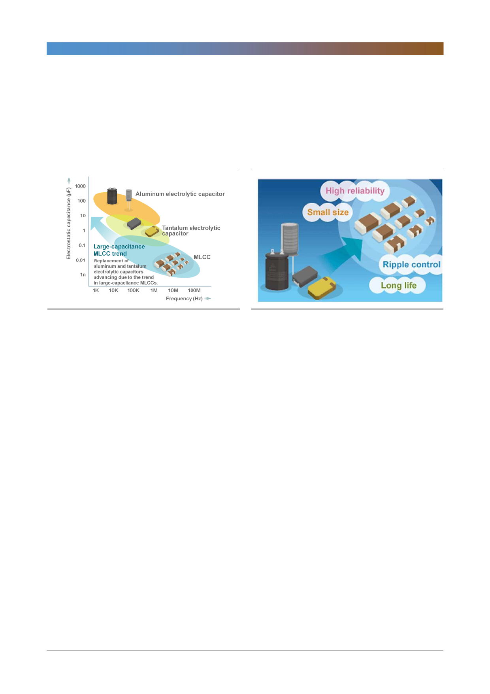

삼성전기(009150)
마지막으로 MLCC가 소형화/대용량화되면서 기존의 알루미늄 콘덴서, 탄탈룸 콘
덴서를 대체하고 있다. 각각의 콘덴서는 원재료의 특성에 맞게 용도가 다소 상이
했다. 그러나 세라믹 콘덴서의 단점이었던 적은 용량 등이 성능 개량으로 인해 극
복되면서 MLCC의 범용성이 더 커졌다.
[그림 10] MLCC가 알루미늄, 탄탈룸을 대체 중
[그림 11] MLCC의 장점은 작고, 높은 신뢰도 보임
자료: TDK, 한국투자증권
자료: Synaptics, 한국투자증권
기업개요 및 용어해설
삼성전기는 핵심 전자부품을 생산하는 종합부품업체로써 소재, 다층박막성형, 회로기술을 기반으로 수동부품, 기판, 모듈
등의 사업을 영위하고 있는 종합부품 회사이다. 사업부는 크게 모듈(DM), 컴포넌트(LCR), 기판(ACI) 사업부로 나뉘어져
있다. 모듈 사업부는 카메라모듈, 통신모듈, 무선충전모듈 등 모듈을 제조하는 사업부다. 컴포넌트 사업부는
MLCC(Multi Layer Ceramic Capacitor), 칩 인덕터, 칩 저항 등을 개발, 생산한다. 기판 사업부는 반도체용 패키지 기판,
고밀도 다층기판 등 인쇄회로기판을 제조한다. 2017년 3분기 주요 사업부문별 누적매출비중은 모듈 47.6%, 컴포넌트
32.3%, 기판 20.1%, 최대주주는 삼성전자 외 특수관계인으로 지분율은 24.0%이다.
• MLCC: 적층세라믹콘덴서, 금속판 사이에 전기를 유도하는 물질을 넣어 전기를 저장했다가 필요에 따라 안정적으로
회로에 공급하는 기능. 대부분의 전자제품에 필수적으로 들어간다.
• 전장부품: 일반적으로 기존에 기계식으로 작동하던 장치들을 전자식으로 바꾸기 위해 필요한 부품들을 말한다.
5